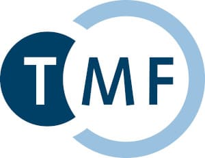

The PrivateAIM project involves a total of 17 partners from all four consortia of the Medical Informatics Initiative (MII). Three MII-funded junior research groups are also involved. The project is coordinated by the University Hospital of Tübingen, the Berlin Institute of Health at the Charité and the Technical University of Munich.
| Coordination | ||
|
|
|
| Project partner | ||
|  | ||
| Associated partners | ||